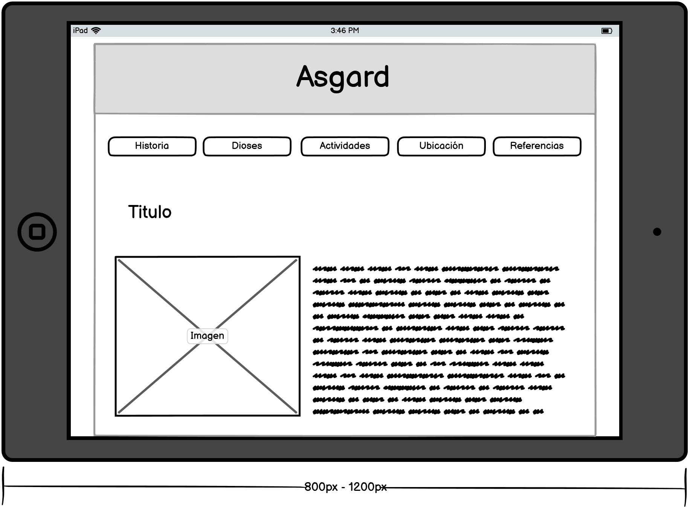

ASGARD
Historia
Dioses
Actividades
Ubicación
Mapa
Referencias
Mapa de navegación
Bocetos
Bocetos de la pagina en pantallas > 1200px
Diseño 1
1200px" />
Diseño 2
1200px" />
Bocetos de la pagina en pantallas de tablets o portatiles entre 800px y 1200px de forma horizontal
Diseño 1

Diseño 2
Bocetos de la pagina en pantallas de tablets o portatiles entre 480px y 800px de forma vertical
Diseño 1
Diseño 2
Bocetos de la pagina en pantallas de celulares entre 480px y 800px de forma horizontal
Diseño 1
Diseño 2
Bocetos de la pagina en pantallas de celulares < 480px de forma vertical
Diseño 1
Diseño 2
Referencias
Información
Historia de Odín
Historia de Thor
Historia de Frey
Historia de Freyja
Las pruebas de Thor
Historia de Idunn
Historia de Asgard
Imágenes
El arbol Yggdrasil
El origen del mundo en la mitología nórdica
La vaca primigenia
Asgard en el arbol Yggdrasil
Odín
Thor
Frey
Freyja
Árbol genealógico de los dioses nórdicos
Los retos de Thor
Asgard en el Yggdrasil
Carruaje de Thor
Manzanas de Idunn
Palacio de Asgard
Volver al inicio
© Luis Santiago Solano Pardo - Universidad Nacional de Colombia
Correo
lusolanop@unal.edu.co
Gráfica interactiva